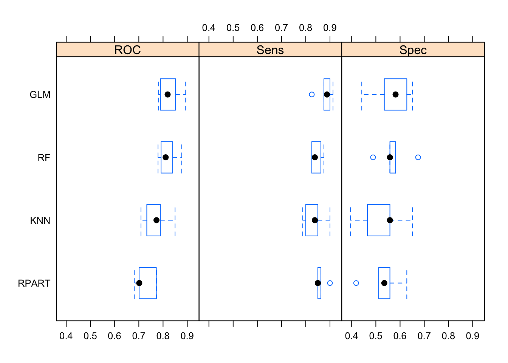

Chapter 7 Comparing Models
One of the more frequent activities in Machine Learning relates to setting up “shoot outs” between different models to see which one will perform the best. This is something we could do without caret but the package does help accomplish this using a standard interface. We’ll keep using the Pima Indians Data and (re)build a few models. We’ll use a common control object as well as a seed to maintain reproducibility.
control <- trainControl(method="cv",
number=5,
summaryFunction = twoClassSummary,
classProbs = TRUE)
# Train the glm model
set.seed(7)
model_glm <- train(diabetes ~ .,
data=pm,
method="glm",
metric="ROC",
trControl=control)
# Train the Decision Tree <odel
set.seed(7)
model_rpart <- train(diabetes~.,
data=pm,
method="rpart",
metric="ROC",
trControl=control)
# Train the Random Forest model
set.seed(7)
model_rf <- train(diabetes~.,
data=pm,
method="rf",
metric="ROC",
trControl=control)
# Train the knn model
set.seed(7)
model_knn <- train(diabetes~.,
data=pm,
method="knn",
metric="ROC",
trControl=control)
# Use the resamples function to prep for comparisons
results <- resamples(list(GLM = model_glm,
RPART = model_rpart,
RF = model_rf,
KNN = model_knn))Now we can easily look at how well the different models compare:
##
## Call:
## summary.resamples(object = results)
##
## Models: GLM, RPART, RF, KNN
## Number of resamples: 5
##
## ROC
## Min. 1st Qu. Median Mean 3rd Qu. Max. NA's
## GLM 0.7903774 0.8116981 0.8251852 0.8297484 0.8479630 0.8735185 0
## RPART 0.7018868 0.7136111 0.7229245 0.7455549 0.7684259 0.8209259 0
## RF 0.8068868 0.8082075 0.8111111 0.8295744 0.8565741 0.8650926 0
## KNN 0.7108491 0.7571698 0.7794444 0.7858260 0.8311111 0.8505556 0
##
## Sens
## Min. 1st Qu. Median Mean 3rd Qu. Max. NA's
## GLM 0.84 0.86 0.89 0.888 0.92 0.93 0
## RPART 0.74 0.76 0.79 0.818 0.88 0.92 0
## RF 0.84 0.84 0.84 0.852 0.87 0.87 0
## KNN 0.79 0.80 0.86 0.844 0.87 0.90 0
##
## Spec
## Min. 1st Qu. Median Mean 3rd Qu. Max. NA's
## GLM 0.5283019 0.5471698 0.5925926 0.5780573 0.6111111 0.6111111 0
## RPART 0.4716981 0.5740741 0.5849057 0.5928022 0.5925926 0.7407407 0
## RF 0.5555556 0.5660377 0.5849057 0.6005590 0.6481481 0.6481481 0
## KNN 0.4629630 0.5283019 0.5471698 0.5410203 0.5555556 0.6111111 0